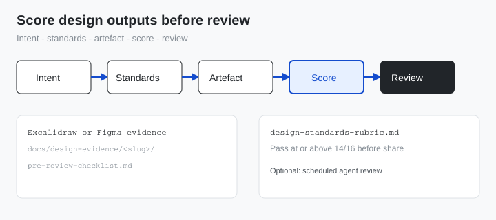

8-dimension rubric; pass ≥ 14/16.
Toolkits / Design
Walkthrough
Score design outputs before review
AI-assisted UI often looks fine in the prompt and falls apart in review. This walkthrough shows a simple loop: write intent, attach evidence, score against a rubric, then share. Works with Figma, Excalidraw, or files in any repo.
You need: A component list or design system reference, a place to store rubrics and wireframes, ~30 minutes for first-time setup.
After this walkthrough
A design rubric and pre-review checklist your team can reuse, plus a five-step loop to run before every design share or agent-generated UI review.
Start here
A design-only scoring loop you can run in any team. For research plus repeating agent review, see the R&D walkthrough.
Who this is for
| Role | Why run this |
|---|---|
| Product designer | Higher first-pass acceptance on Figma or Excalidraw shares |
| Design lead | One rubric the team scores against before critique meetings |
| PM / builder using agents | Fewer “third revision” prompt loops on UI output |
What you’ll have
- A design rubric (8 rows, typical pass 14/16)
- A checklist copied per task
- Evidence as Excalidraw, Figma link, or file in your chosen folder
- Optional: repeating agent review (see R&D loop)
Why score first
What changed when we made the checklist mandatory before share.
Before Prompt, screenshot, design review, debate, re-prompt. Often three rounds before anyone agrees what done means.
After Intent, rubric, and evidence scored before share. Review becomes approve or one targeted fix instead of open-ended debate.
Walkthrough
Run once to set up. Repeat steps 3-4 before each design share.
-
Step 1
Write intent and acceptance criteria.
# Example shape (use your feature name) Intent: User can complete checkout without leaving the cart. Pass checks: - Error shown if payment fails - Focus order documented - Empty cart state exists
Expected: approver can say yes/no without opening comments first.If it fails: Criteria sound subjective ("feels polished"). Rewrite as pass/fail checks.
-
Step 2
Adapt the design rubric.
Download the starter rubric from this page. Save it where your team agrees (wiki, drive, or repo). Edit rows 3 and 5 for your design system and accessibility bar.
Expected: 8 rows, pass threshold written at top, stored at a stable path everyone knows.If it fails: Team ignores the rubric. Run a short working session on rows 3 and 5 only.
-
Step 3
Attach evidence.
# Pick one canonical artefact per screen or flow: # - Excalidraw file in your project folder, or # - Figma frame URL pasted in the checklist, or # - Spec markdown linked from the checklist # Intent lives in the checklist, not only on the canvas.
Expected: one link or file per feature; scope matches step 1.If it fails: Only prose from an agent, no file. Require wireframe or frame before review.
-
Step 4
Score before share.
1. Copy pre-review-checklist.md for this task 2. Score each rubric row 0, 1, or 2 3. Share only if total >= pass threshold (default 14/16) 4. Include checklist + artefact link in the review request
Exit: design review invite includes checklist link and artefact path.If it fails: Scores cluster at 10-12. Fix intent or edge states, not the prompt adjective list.
-
Step 5
Automate (optional).
# Design-only: steps 1-4 are enough for most teams. # Research + repeating review: see score-research-and-design-loop.html # - path-convention.md + agent-review-prompt.md # Run manually in any chat agent, or on a schedule you choose.
Expected: if you automate, the agent scores your design files with your rubric - not someone else's repo layout.If it fails: Agent wanders to unrelated folders. Paste explicit paths from your path convention into the prompt.
Further reading
Optional public references. Not required to run this walkthrough.
| Name | Type | Why this one | Link |
|---|---|---|---|
| Score R&D loop | Walkthrough | Add research rubrics and repeating agent review | Open |
| Nielsen Norman Group | Article | Heuristic evaluation rows for design rubrics | nngroup.com |
| W3C WCAG quick ref | Reference | Concrete accessibility checks for rubric row 5 | w3.org |
| Excalidraw | Tool | Open wireframe format for evidence files | excalidraw.com |
Acceptance loop
Same five-step loop as the diagram below. Customize folder names to match your team.

Downloads
Copy into your repo. Adapt dimensions 3 and 5 for your design system.
-
design-standards-rubric.md -
pre-review-checklist.md Per-task checklist with score log table.
-
acceptance-loop.excalidraw Editable loop diagram for team workshops.
Troubleshooting
Symptom → fix, tied to the step where it usually appears.
- Review still turns into opinion debate. Step 1 - Acceptance criteria are not testable; rewrite as pass/fail.
- Rubric ignored after week one. Step 2 - Tie share permission to checklist in PR or Figma description template.
- Agent output has no file. Step 3 - Require
.excalidrawor Figma frame URL before review; see wireframe walkthrough. - Scores always 10-12. Step 4 - Missing edge states or undo path; fix artefact scope, not prompt length.
- Cron scores toolkit HTML instead of design files. Step 5 - Use R&D loop or skip automation on this slice.
Related walkthroughs
Attribution. Starter templates are generic guidance - adapt paths and rubric rows for your organisation. Research + agent loop: score research and design loop.